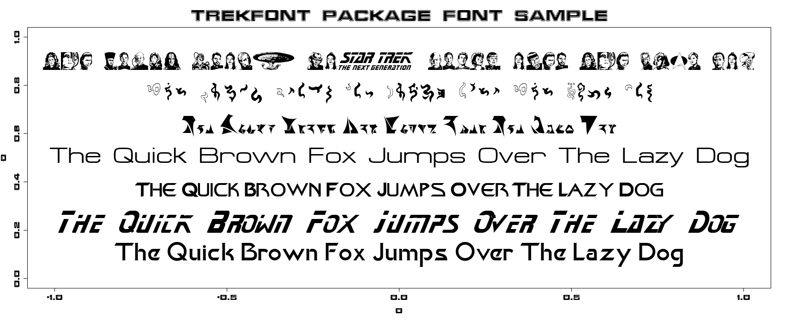
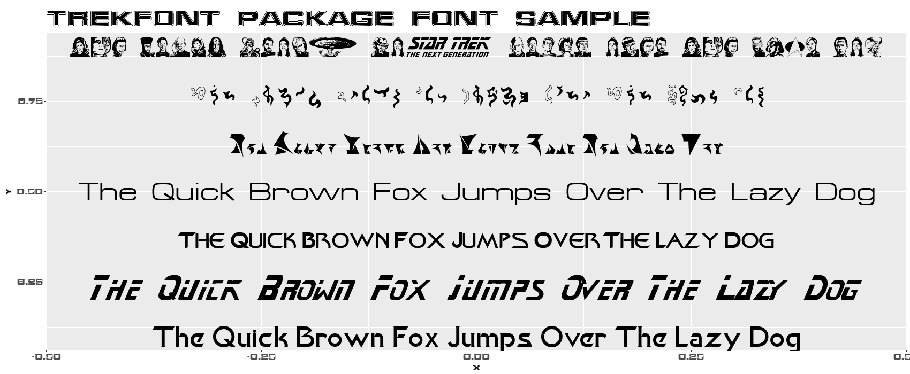

trekfont is now available on CRAN. This is a simple data package that exposes 107 Star Trek font families. You might not want to use Star Trek fonts for work, but if you are making plots for fun and like Star Trek then these fonts are for you.
This post gives a basic example of one how to load these fonts in R for use in plots. Using external font files is handled by the showtext package, which uses the sysfonts package to load the fonts. There is no need to load the trekfont package directly; you only need it installed. To see all available font files, call trekfont::trekfonts.
This example shows eight fonts. font_add and font_families below are part of the sysfonts package loaded by showtext. Use these to load fonts and then check to see that they are now available, respectively. showtext_auto handles the rest. If you are not already familiar with showtext see its documentation for broader examples.
# install.packages('trekfont')
library(showtext)
font <- c("Khan", "StarNext", "FederationDS9Title", "Federation", "Klingon",
"ModernVulcan", "TNGcast", "FederationStarfleet")
path <- system.file(paste0("fonts/", font, ".ttf"), package = "trekfont")
for (i in 1:8) font_add(font[i], path[i])
font_families()
#> [1] "sans" "serif" "mono"
#> [4] "wqy-microhei" "Khan" "StarNext"
#> [7] "FederationDS9Title" "Federation" "Klingon"
#> [10] "ModernVulcan" "TNGcast" "FederationStarfleet"
showtext_auto()First use base graphics.
y <- seq(0.1, 0.9, length.out = 7)
txt <- "The Quick Brown Fox Jumps Over The Lazy Dog"
plot(0, 0, type = "n", ylim = c(0, 1), main = "trekfont package font sample",
family = font[8])
for (i in 1:7) text(0, y[i], txt, family = font[i])
Did you ever think you would be annotating your plots in Vulcan and Klingon? Next use ggplot2.
library(ggplot2)
g <- ggplot() + theme_gray(base_family = font[8]) + ggtitle("trekfont package font sample")
for (i in 1:7) g <- g + annotate("text", 0, y[i], label = txt, family = font[i],
size = 12.5)
g
That’s all there is to it. Qapla’! The above code is simplified. You can tweak your par and ggplot2 theme settings to achieve a similar appearance to what is shown in the plots.
If you have trouble with the fonts not displaying and are receiving warnings such as
In grid.Call.graphics(C_text, as.graphicsAnnot(x$label), x$x, x$y, : font family not found in Windows font database
don’t be a petaQ. Try using showtext via the regular R GUI rather than through the RStudio IDE. Unfortunately showtext does not currently work with RStudio’s built-in graphics device.